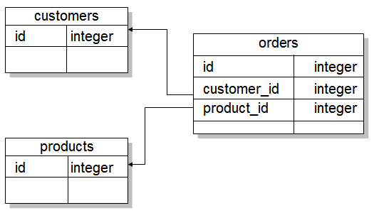
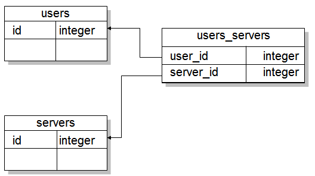

接續 一對多關聯 的內容，如果一個客戶擁有多個訂單，訂單是關於某項產品，如果設計上，想讓讓客戶與產品間形成多對多雙向關聯，可以如下定義：
# app/models/customer.rb
class Customer < ActiveRecord::Base
has_many :orders
has_many :products, :through => :orders
end
# app/models/order.rb
class Order < ActiveRecord::Base
belongs_to :user
belongs_to :products
end
# app/models/product.rb
class Product < ActiveRecord::Base
has_many :orders
has_many :customers, :through => :orders
end
此時表格上必須有以下的關係：

以上的情況，設計需求上也許本來就包括了
Order模型，另一種多對多關係，是不需要中介模型存在的情況，例如一個使用者會使用多台電腦，而一台電腦會有多個使用者，模型設計上也許只需要：
# app/models/user.rb
class User < ActiveRecord::Base
has_and_belongs_to_many :servers
end
# app/models/server.rb
class Server < ActiveRecord::Base
has_and_belongs_to_many :users
end
此時表格上必須有以下關係：

可以先產生遷移檔：
$ rails g migration create_user_server_join_table
|
然後如下撰寫：
class CreateUserServerJoinTable < ActiveRecord::Migration
def change
create_table :users_servers, :id => false do |t|
t.integer :user_id
t.integer :server_id
end
end
end
has_and_belongs_to_many會為模型加入以下的方法：
- collection(force_reload = false)
- collection<<(object, …)
- collection.delete(object, …)
- collection=objects
- collection_singular_ids
- collection_singular_ids=ids
- collection.clear
- collection.empty?
- collection.size
- collection.find(…)
- collection.where(…)
- collection.exists?(…)
- collection.build(attributes = {})
- collection.create(attributes = {})
有關
has_and_belongs_to_many，還有一些可設置的選項，可參考
A Guide to Active Record Associations 中
4.4 has_and_belongs_to_many Association Reference 的內容，關聯時查詢的相關進階議題，可參考
Active Record Query Interface。